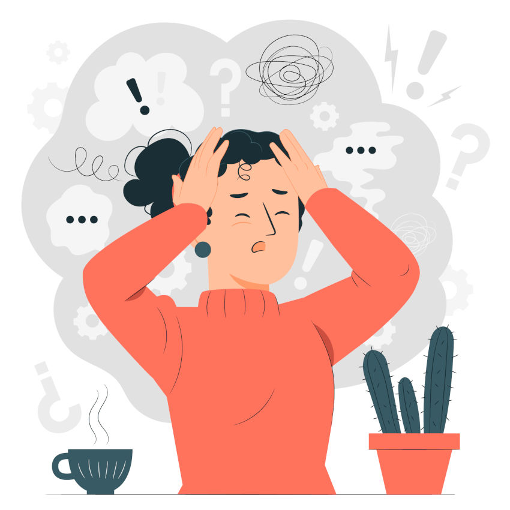

Factores de riesgo.
Factores de riesgo.
Los factores de riesgo para padecer ansiedad incluyen:
- Antecedentes familiares de trastornos de ansiedad o depresión.
- Estrés crónico o eventos traumáticos en la vida.
- Problemas de salud física crónicos o enfermedades graves.
- Consumo de sustancias adictivas como el alcohol o drogas.
- Determinadas personalidades o estilos de afrontamiento, como ser perfeccionista o tener una baja autoestima.
- Falta de habilidades sociales o de afrontamiento.
- Desajustes hormonales en mujeres, como durante el embarazo o la menopausia.
- Condiciones médicas como la tiroides hiperactiva o el síndrome de intestino irritable.
- Problemas financieros o laborales.
- Exposición prolongada a situaciones estresantes, como el trabajo o las relaciones personales.